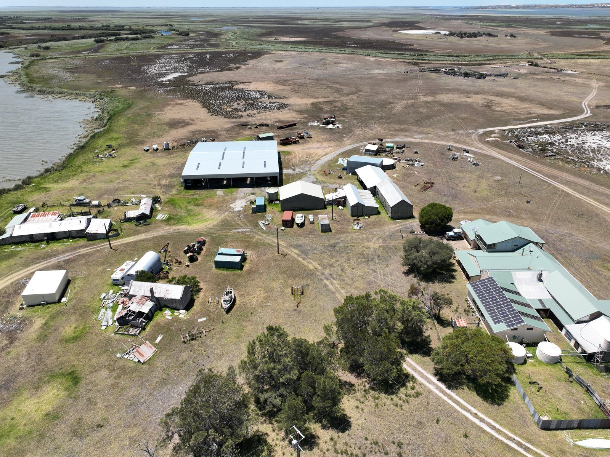
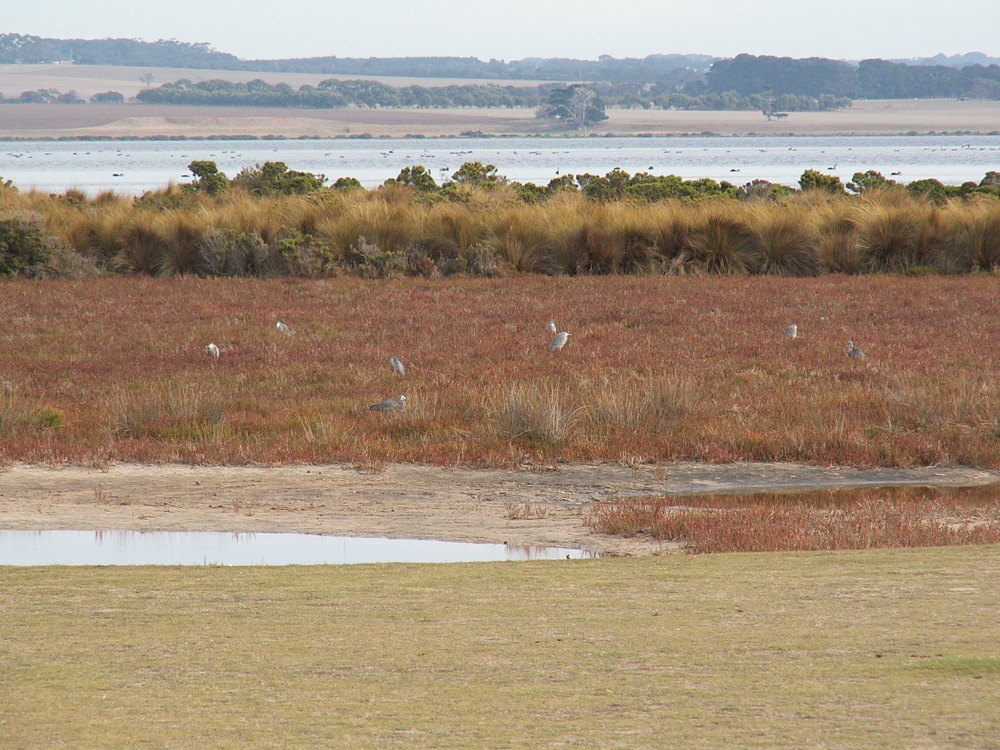
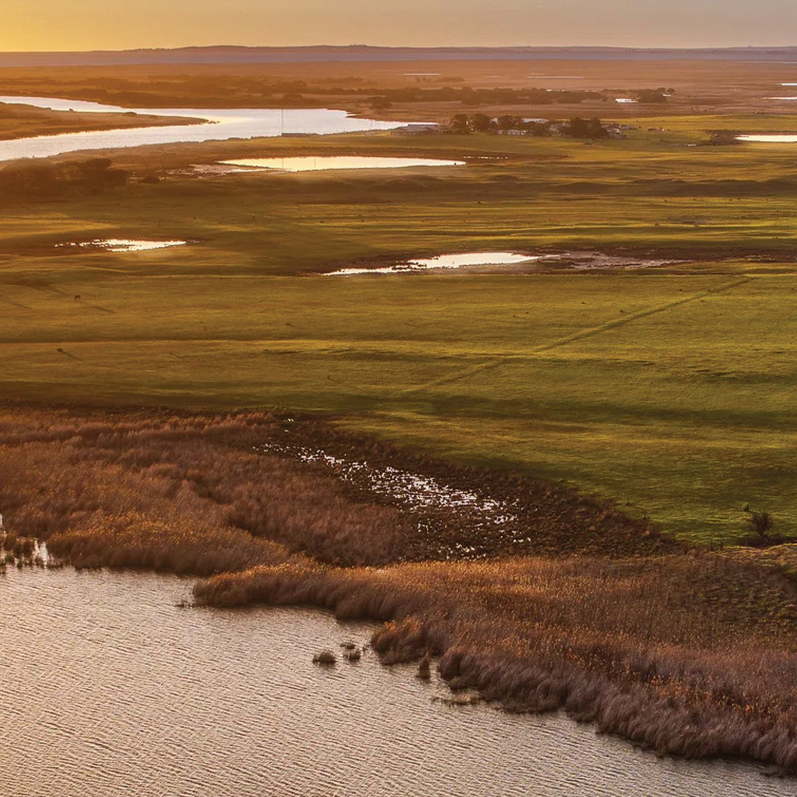
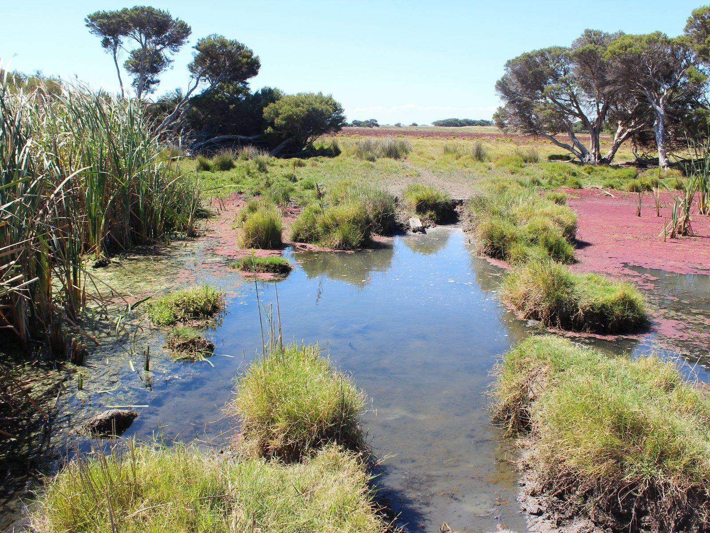
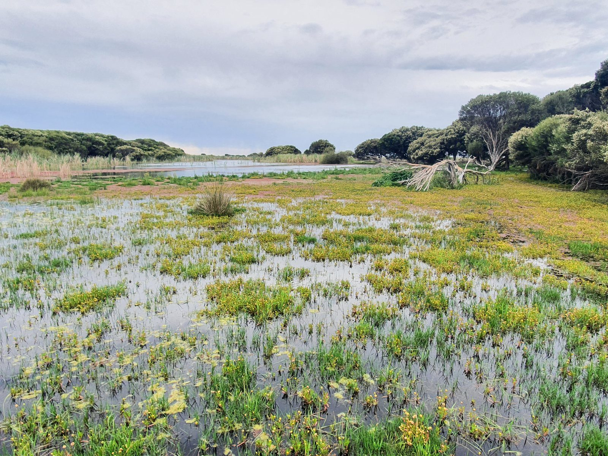
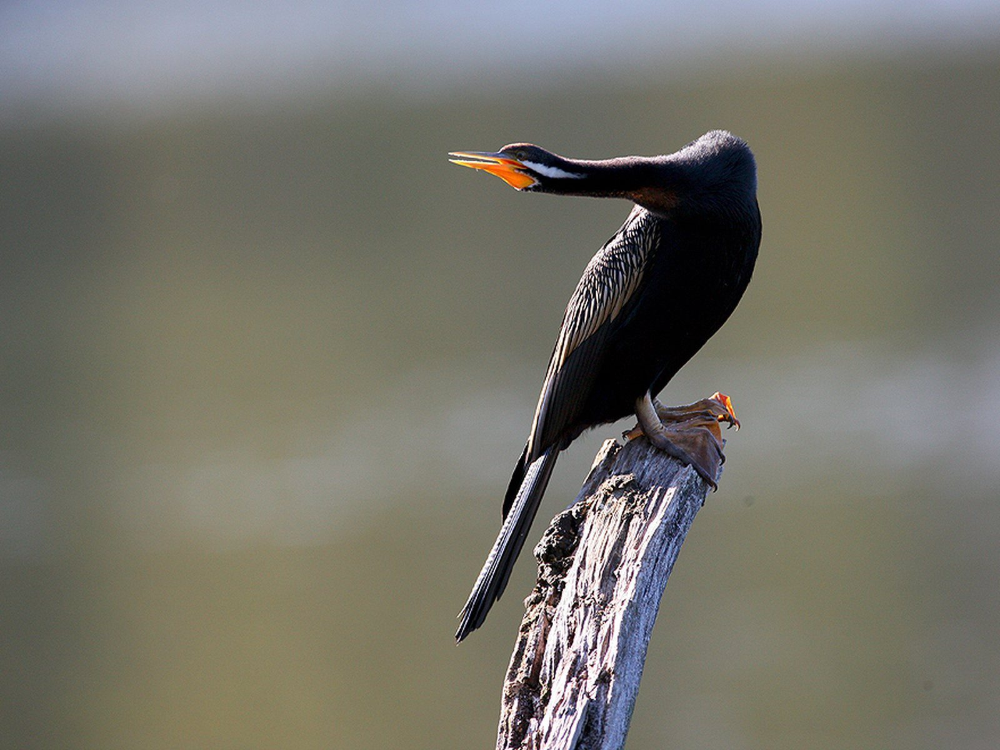
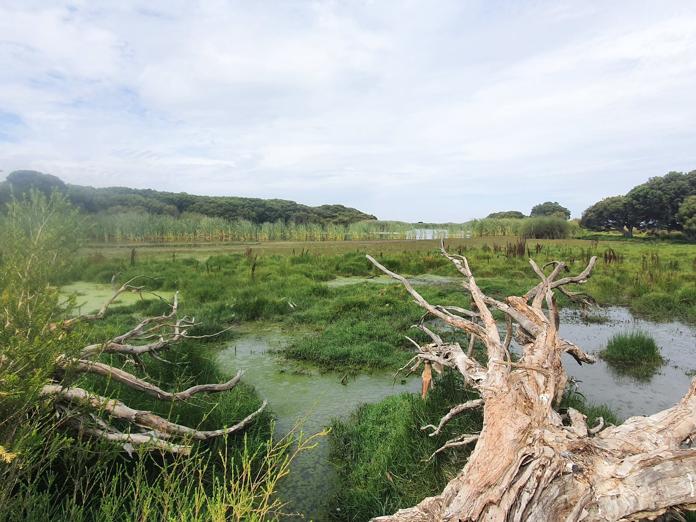

Mundoo Island Station
Nineteen hundred hectares at the mouth of the Murray, farmed for more than a century, secured in 2025 and now being added to Coorong National Park. It is the kind of thing that becomes possible perhaps once in a generation, and only if someone is ready when it does.
Figures from the joint announcement by the Australian and South Australian Governments, January 2026.

Land at the Murray Mouth does not come up for sale
The Murray runs 2,500 kilometres and ends here, in a maze of channels and islands where its last fresh water meets the Southern Ocean. Almost everything about the health of the river system shows up at this point, which is why the wetlands around it carry international protection. Very little of it has ever been available to buy.
Mundoo Island Station had been held and farmed for more than a hundred years, running cattle and sheep across country that sits inside one of Australia's most significant wetland systems. When the whole of it came onto the market, the window was narrow. Land like this is bought by whoever is ready to move, and what happens to it afterwards is settled in that moment.

Some of the birds feeding here have flown from Siberia to do it
Mundoo sits inside the Coorong and Lakes Alexandrina and Albert Ramsar Wetland, 142,500 hectares recognised as internationally important. Its shallows are a refuelling stop on the East Asian-Australasian Flyway, which means shorebirds that breed in the Arctic depend on what is left of this shoreline to complete a migration most of them make every year of their lives.
The species that gain most from this are among the ones with least to spare. The curlew sandpiper and the far eastern curlew are both listed as critically endangered, and the banded stilt and red-capped plover feed and nest on exactly this kind of ground. Below the waterline the same protection reaches the Yarra pygmy perch, the southern pygmy perch, the Murray hardyhead and the purple-spotted gudgeon, small fish that have been squeezed hard by a century of changes upstream.

Someone decided years ago that this is what their money was for
We came in as an acquisition partner alongside the Australian Government, through its Enhanced Shorebirds and Wetland Habitat Project and its Protecting Important Biodiversity Areas Program, and the South Australian Government through the Department for Environment and Water and the Algal Bloom Community Fund. No single party could have carried it alone, and the timing left no room to assemble one slowly.
A substantial part of what we were able to put in came from a gift in a will. Someone had decided, years before any of this was on the market, that what they left behind should go to the natural world, and that decision was sitting there ready when a century-old station at the Murray Mouth needed a buyer inside a few weeks. That is the quiet argument for gifts in wills, and it is difficult to make more plainly than this.
The acquisition of Mundoo Island Station marks a significant milestone in the Foundation for National Parks & Wildlife's commitment to safeguarding Australia's unique natural environment and protecting First Nations cultural heritage.
The first job is to stop doing things
Restoration here does not begin with planting. It begins with removal. The station is being destocked, and grazing, cropping and fertiliser use are all ending on the island. On land that drains directly into a Ramsar wetland, cutting the nutrient load flowing off the paddocks is one of the most useful things anyone can do, and it takes effect the moment the practice stops.
After that the work is slower and mostly a matter of getting out of the way. Saltmarsh, wetland and native vegetation are given the conditions to come back on their own, under management informed by science rather than by what the country was previously asked to produce. The South Australian Government is preparing a new management plan that will set conservation priorities, cultural values and community partnership together rather than in sequence.
Bringing Lawari Conservation Park into Coorong National Park at the same time matters more than a line on a map suggests. Protected areas work better when they are joined up, and this will consolidate a fragmented stretch of the Murray Mouth into a single park of more than 50,000 hectares.



This was never empty land waiting to be protected
Mundoo Island holds deep cultural and spiritual significance for the Ngarrindjeri people, whose connection to this Country reaches back thousands of years and continues now. National park status brings formal recognition and protection for Aboriginal heritage and cultural sites on the island, and the management plan is being developed with the Ngarrindjeri Aboriginal Corporation rather than presented to them.
Bill Wilson, Executive Officer of the Ngarrindjeri Aboriginal Corporation, said the Corporation looks forward to working in a co-partnership relationship with the State Government around the care and protection of Mundoo Island into the future.
Counted once, protected permanently
Australia has committed to protecting 30 per cent of its land by 2030, and commitments of that shape are met in pieces. Nineteen hundred hectares is one of them, and unlike most conservation gains it is not conditional on the next funding round, the next season or the next government. Land inside a national park stays inside a national park.
What the island looks like in twenty years depends on the slower work now beginning, and on whether the wetlands respond as the science expects once the stock and the fertiliser are gone. The birds will answer that question before any of the reports do.
If you are considering a gift in your will, this page is what one looks like when it lands. More on leaving a gift to nature.
Project partners
Delivered with the Ngarrindjeri Aboriginal Corporation, and acquired in partnership with the Australian Government, the South Australian Government, the Department for Environment and Water, local communities and environmental agencies.
Australian Government funding came through the Enhanced Shorebirds and Wetland Habitat Project and the Protecting Important Biodiversity Areas Program. South Australian Government funding included the Algal Bloom Community Fund. Our contribution as an acquisition partner was supported by gifts in wills.
What 1,900 hectares actually holds



A new future for Mundoo Island and the Coorong
Our announcement of the acquisition, and what national park protection changes for this landscape.
Read the story →Gifts of land
How land with conservation value can be protected permanently, in your lifetime or through your will.
Find out how →Help fund work like this.
Every one of our projects is powered by donations, gifts in wills and partnerships.